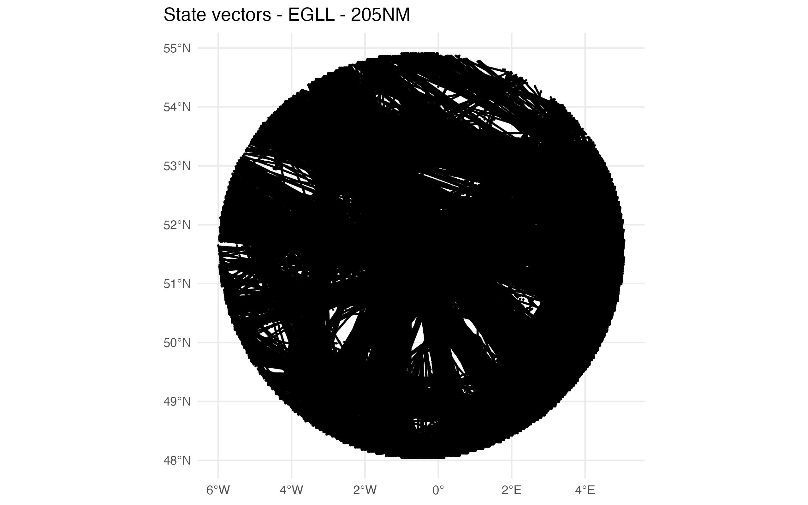
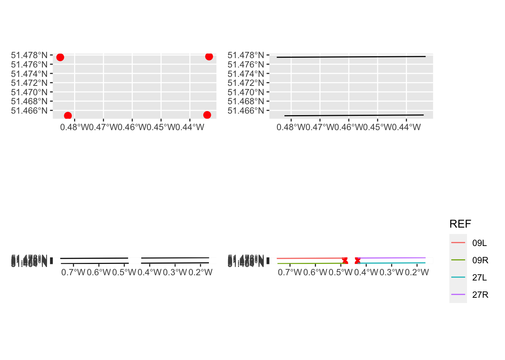
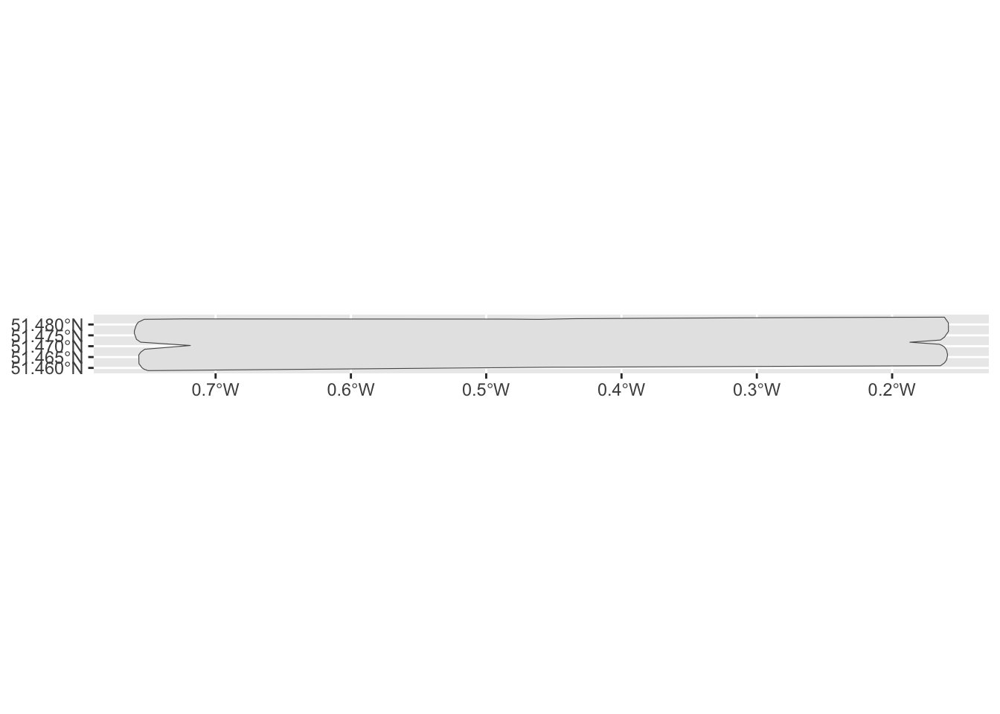
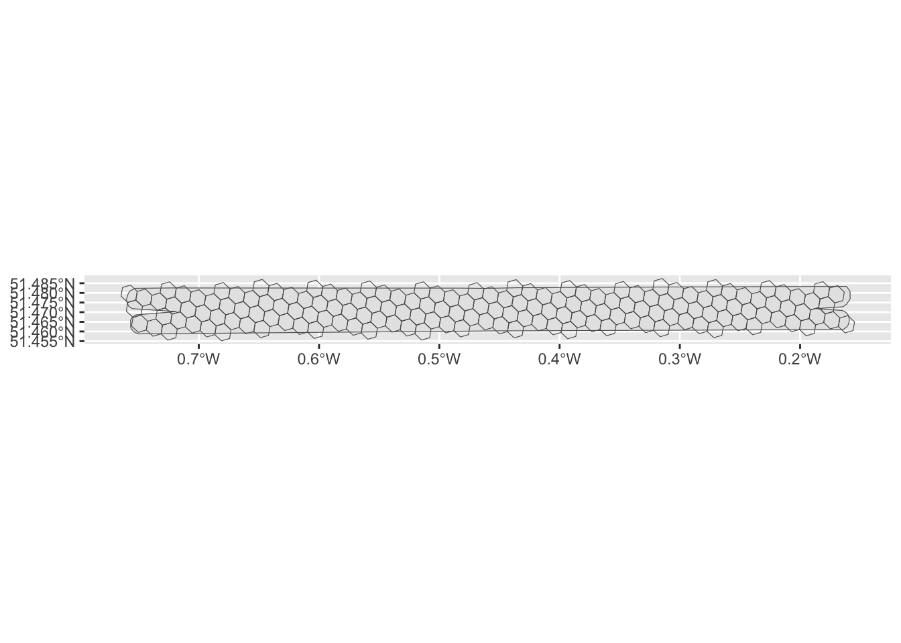
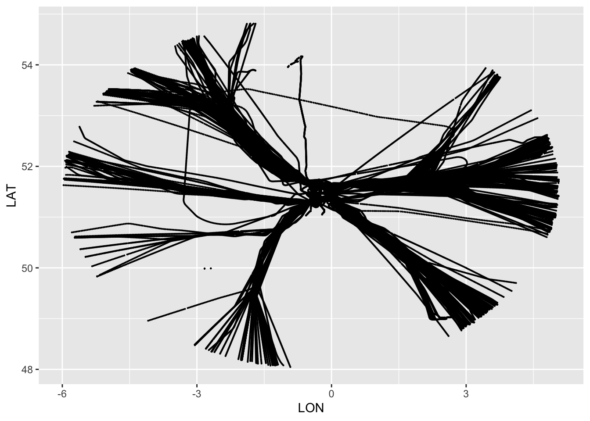
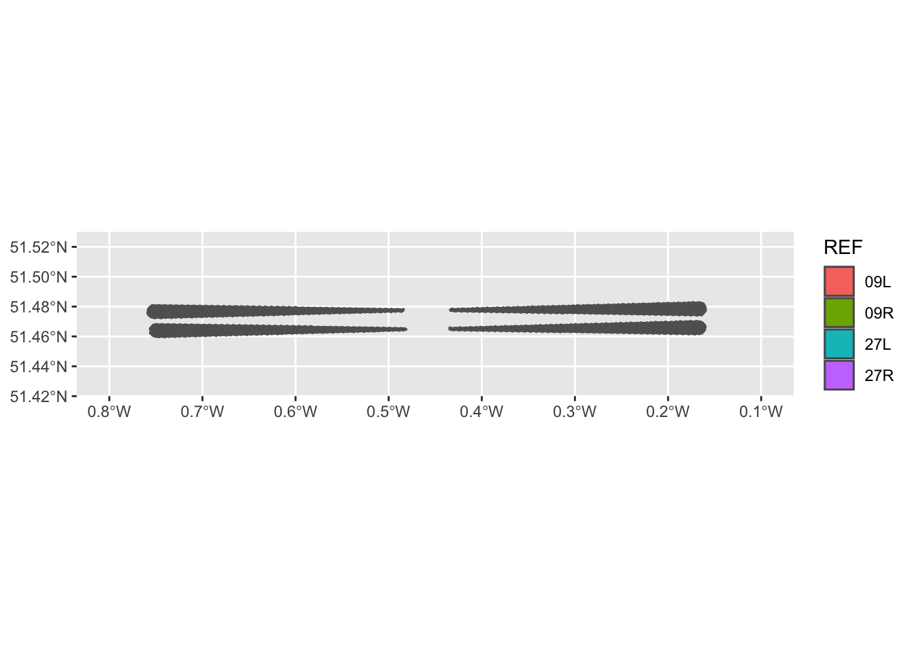
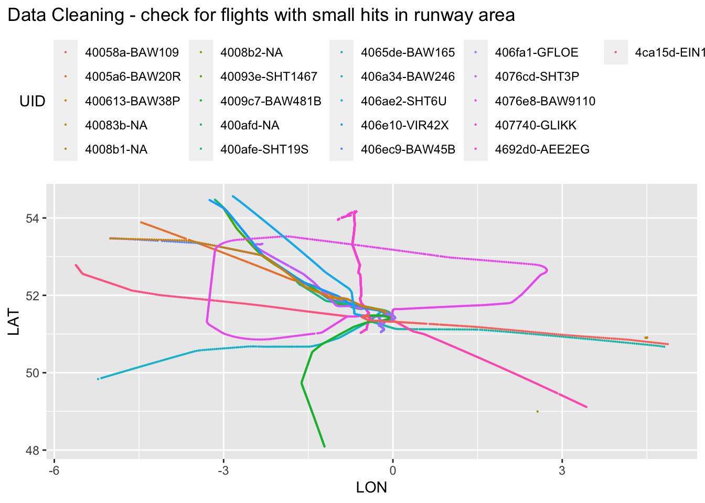

library(ggplot2)
library(patchwork)Data Preparation
Note
This section is under development. The idea is to provide a pipeline to reproduce the examples.
- download data from OSN and/or package Zenodoo
- subset trajectory data for study airports
- extract / label trajectories
- detect level segments
Toy Data
For the model development, we create some toy data based on a dataset retrieved from OSN. The data is stored locally (in a central folder one level up). It will be read and then a subset created for this section.
- read in tar-dump
- clean
- rename/standardise variable names
- coerce meter -> feet, time to ymd_hms
pth_up <- here::here() |> dirname()
toy_date <- "2019-08-01"
pth_data <- list.files(path = here::here(pth_up, "__DATA", "OSN-dumps"), pattern = toy_date, full.names = TRUE)
source("./R/osn_read_tar.R") # read OSN tar dump
source("./R/osn_make_nice_names.R") # standardise variable names
source("./R/osn_clean_statevector.R") # steps to make OSN svs useful
source("./R/coerce_meter_to_feet.R") # m --> ft
source("./R/coerce_unixepoch_to_datetime.R") # xxxx --> yyyymmdd hh:mm:ss
# load all state vectors for chosen date
# OSN dumps ~ hourly state vectors ==> loop over all 24 files
svs <- purrr::map(.x = pth_data, .f = ~ read_osn_tar_file(.x)) |>
dplyr::bind_rows() |>
clean_osn_statevectors()The toydata is built for EGLL, EHAM, and EDDF (for now).
Battle-plan: read in ARP & subset state vectors within radius (e.g. 205NM) around ARP.
Aerodrome information * TODO - query database and subset for study use –> ARP, RWY thresholds * currently done by hand - stored in ./data/aip-arp-rwys.csv
For the geo-spatial subsetting we use {sf}.
# load some AIP points
aip <- readr::read_csv("./data/aip-arp-rwys.csv", show_col_types = FALSE)
this_arp <- aip |> dplyr::filter(ICAO == "EGLL", REF == "ARP")
source("~/RProjects/PBWG-trajectory/R/cast_sf_utils.R") # utility functions
source("~/RProjects/PBWG-trajectory/R/spatial_subset_jormungand.R") # subset R# model building
## pick one airport/ARP
svs_apt <- subset_around_point(svs, this_arp)
## save out for later re-use
#arrow::write_parquet(svs_apt |> sf::st_drop_geometry(), "./data/egll_205NM.parquet")
## show-case
plot_svs_apt <- ggplot() + geom_sf(data = svs_apt, size = 0.1) +
theme_minimal() +
theme(plot.title.position = "plot") +
labs(title = "State vectors - EGLL - 205NM")
ggsave(plot = plot_svs_apt
, filename = "./figures/snapshot-egll-205NM.png"
, dpi = 320, bg = "white"
, width = 8, height = 5)knitr::include_graphics("./figures/snapshot-egll-205NM.png")

Subsetting Arrival and Departure Trajectories
Note
with toy dataset –> identify arrivals and departures –> label trajectories (maybe before hand, clean trajectories ~ ensure no gaps, etc)
then assign landing runway
then determine characteristic points (e.g. crossings, level segments)
STORE RESULTS IN EVENT-MILESTONE-LIST
Airport Polygon
We define the airport polygon area as a convex hull based on the runway system.
As a heuristic we can assume aircraft to land or take-off from an aerodrome operating within this convex hull (at altitudes close to the Field Elevation).
# runway system for EGLL
this_rwys <- aip |> dplyr::filter(ICAO == "EGLL", TYPE == "THR")
# load utility functions "sf-ing" runway system stuff
source("~/RProjects/PBWG-trajectory/R/cast_sf_rwys.R")
Note
NOT FULLY SURE WHAT TO DO WITH THIS!
The legacy packages maptools, rgdal, and rgeos, underpinning the sp package, which was just loaded, will retire in October 2023. Please refer to R-spatial evolution reports for details, especially https://r-spatial.org/r/2023/05/15/evolution4.html. It may be desirable to make the sf package available; package maintainers should consider adding sf to Suggests:. The sp package is now running under evolution status 2 (status 2 uses the sf package in place of rgdal)
# plot the thresholds
this_rwys_sf_pts <- this_rwys |> cast_latlon_to_pts(.drop_coord = FALSE)
# plot thresholds
p1 <- ggplot() +
geom_sf(data = this_rwys_sf_pts, size = 3, color = "red")
# plot runways
p2 <- ggplot() +
geom_sf(data = this_rwys |> cast_rwy_ls())
# plot extended centerlines
p3 <- ggplot() +
geom_sf(data = this_rwys |> cast_rwy_ctr_line_ls())The legacy packages maptools, rgdal, and rgeos, underpinning the sp package,
which was just loaded, will retire in October 2023.
Please refer to R-spatial evolution reports for details, especially
https://r-spatial.org/r/2023/05/15/evolution4.html.
It may be desirable to make the sf package available;
package maintainers should consider adding sf to Suggests:.
The sp package is now running under evolution status 2
(status 2 uses the sf package in place of rgdal)# plot thresholds and centerline
p4 <- ggplot() +
geom_sf(data = this_rwys_sf_pts, size = 2, color = "red") +
geom_sf(data = this_rwys |> cast_rwy_ctr_line_ls(), aes(color = REF))
(p1 + p2) / (p3 + p4)
Based on this, we can construct an “airport box” comprising the runway system and its extended centerlines.
apt_box <- this_rwys |> airport_centerline_box()
p_apt_box <- ggplot() +
geom_sf(data = apt_box)
p_apt_box
We can associate the airport box polygon with H3 indexes.
Note: The H3 algorithm does not ensure regular hexagons based on the underlying projection choices made. For our purposes, we assume the H3 resolution to broadly respect regularity. Thus, hexagon edge length coincides with radius for the corner points.
Resolution 8 ~ edge length 0.5314km Resolution 10 ~ 0.07586km Resolution 11 ~ 0.02866km
apt_box_h3 <- h3::polyfill(apt_box, res = 8) |> h3::h3_to_geo_boundary_sf()
p_apt_box +
geom_sf(data = apt_box_h3, fill = NA)
Subset Arrivals and Departures
Arrivals and departures are characterised by a runway operation. Thus, the heuristic builds on identifying statevectors (4D LAT/LON positions) at lower altitudes operating within the airport and its extended runway system area.
We further assume ILS operations or associated RNAV overlay operations. This assumes a glidepath of 3 degrees, resulting in an approx 1000ft altitude change over 3NM. Accordingly, an arrival flight established on the glide path should be at 1000ft GND at 3NM to the ground point of intercept, 2000ft at 6NM, and 3000ft at 9NM. Departure flights might - depending on their weight - exhibit higher climb rates. However, for the initial climb out safety standards will ensure a stabilised attitude climb.
From a brute-force perspective
- subset data to airport area and ALT = ELEV + 3500ft
toy_data <- arrow::read_parquet("./data/egll_205NM.parquet")
# spatial subset for outer airport runway system box
at_apt <- toy_data |>
spatial_subset_jormungand(apt_box) |>
dplyr::filter(ALT < this_arp$GEOM_ALT + 3500)
arrs_deps <- at_apt |>
sf::st_drop_geometry() |>
dplyr::group_by(ICAO24, FLTID) |>
dplyr::filter(TIME %in% c(max(TIME), min(TIME))) |>
dplyr::arrange(TIME, .by_group = TRUE) |>
dplyr::mutate(
SEQ = dplyr::row_number()
, PHASE = dplyr::case_when( dplyr::first(ALT) > dplyr::lead(ALT) ~ "ARR"
,dplyr::first(ALT) < dplyr::lead(ALT) ~ "DEP"
)
) |>
dplyr::select(TIME, ICAO24, FLTID, LAT, LON, ALT, SEQ, PHASE, dplyr::everything())
arrs <- arrs_deps |>
dplyr::select(ICAO24, FLTID, PHASE) |>
dplyr::filter(PHASE == "ARR")
deps <- arrs_deps |>
dplyr::select(ICAO24, FLTID, PHASE) |>
dplyr::filter(PHASE == "DEP")Filter the toydata for arrs and plot them
arr_trjs <- toy_data |>
dplyr::left_join(arrs, by = dplyr::join_by(ICAO24, FLTID)) |>
dplyr::filter(PHASE == "ARR")
arr_trjs |> ggplot() +
geom_point(aes(x = LON, y = LAT), size = 0.1)
Runway assignment
rwy_cones <- this_rwys |> centerline_cone()
fill_h3_poly <- function(.sf_poly, .res = 10){
.sf_poly |>
h3::polyfill(res = .res) |>
h3::h3_to_geo_boundary_sf()
}
rwy_cones_h3 <- rwy_cones |>
dplyr::group_by(REF) |>
dplyr::group_modify(.f = ~ fill_h3_poly(.) ) |>
sf::st_as_sf()
# check what we have
ggplot() +
geom_sf(data = rwy_cones, aes(fill = REF)) +
geom_sf(data = rwy_cones_h3, aes(fill = NA)) +
coord_sf(xlim = c(-0.8,-0.1), ylim = c(51.425,51.525))
Trim arrivals to last x-secs * aircraft on final 160kts = 160 NM / 60 min = 16/6 NM/min =~ 2.5 NM/min ==> 10NM ~ 4 min
arr_rwy_association <-
arr_trjs |>
dplyr::select(TIME, ICAO24, FLTID, LAT, LON) |>
dplyr::mutate(H3 = h3::geo_to_h3(cbind(LAT, LON), res = 10)) |>
dplyr::left_join(
rwy_cones_h3 |>
dplyr::rename(H3 = h3_index)|>
sf::st_drop_geometry()
) |>
dplyr::filter(!is.na(REF)) |>
dplyr::group_by(ICAO24, FLTID, REF) |>
dplyr::summarise(N = dplyr::n(), .groups = "drop") |>
dplyr::group_by(ICAO24, FLTID) |>
dplyr::mutate(GRP = dplyr::cur_group_id()) |>
dplyr::ungroup()Joining with `by = join_by(H3)`arr_trjs |>
dplyr::mutate(UID = paste0(ICAO24, "-", FLTID)) |>
dplyr::filter(UID %in% (
arr_rwy_association |>
dplyr::filter(N <= 3) |>
dplyr::mutate(UID = paste0(ICAO24, "-", FLTID)) |>
dplyr::pull(UID))
) |>
ggplot() +
geom_point(aes(x = LON, y = LAT, color = UID), size = 0.1) +
theme(legend.position = "top", plot.title.position = "plot") +
labs(title = "Data Cleaning - check for flights with small hits in runway area")
arr_trjs2 <- arr_trjs |>
dplyr::mutate(UID = paste0(ICAO24,"-", FLTID)) |>
dplyr::left_join(
arr_rwy_association |>
dplyr::mutate(UID = paste0(ICAO24,"-", FLTID))
, by = dplyr::join_by(ICAO24, FLTID, UID))Warning in dplyr::left_join(dplyr::mutate(arr_trjs, UID = paste0(ICAO24, : Detected an unexpected many-to-many relationship between `x` and `y`.
ℹ Row 6680 of `x` matches multiple rows in `y`.
ℹ Row 346 of `y` matches multiple rows in `x`.
ℹ If a many-to-many relationship is expected, set `relationship =
"many-to-many"` to silence this warning.Determine cut-off point for coverage / gate on final
trajectory in h3
arr_trjs2 = arr_trjs2 |> dplyr::select(UID, TIME, ICAO24, FLTID, LAT, LON, ALT, RWY = REF) |> dplyr::mutate(H3 = h3::geo_to_h3(cbind(LAT, LON), res = 10))
gate_5NM_h3 <- gate_5NM |> sf::st_buffer(dist = 500) |> dplyr::group_by(REF) |> dplyr::group_modify(.f = ~ fill_h3_poly(.) ) |> sf::st_as_sf() |> dplyr::ungroup() |> dplyr::mutate(GATE = paste0(REF, “-5NM”)) |> dplyr::rename(H3 = h3_index)
Some confusion ==> clean better & assign phase > arr_trjs2 |> dplyr::inner_join(gate_5NM_h3 |> sf::st_drop_geometry(), by = dplyr::join_by(H3)) |> dplyr::filter(RWY != REF) # A tibble: 17 × 11 UID TIME ICAO24 FLTID LAT LON ALT RWY H3 REF GATE
ggplot(data = arr_trjs2 |> dplyr::filter(UID %in% c(“4692d0-AEE2EG”,“4076e8-BAW9110”,“4005a6-BAW20R”,“406ec9-BAW45B”)) ) + geom_point(aes(x = LON, y = LAT, color = UID), size = 0.5) + xlim(-1,1) + ylim(51.25,51.75)